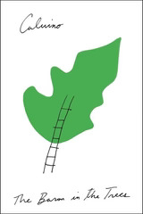

The Baron in the Trees
Il barone rampante
So, The Baron in the Trees feels like an evolution of Calvino's narrative style. Here, we've got Biagio writing about his brother, and largely relying on his brother to tell stories that he didn't directly observe -- while acknowledging that Cosimo is at times an unreliable narrator. It's definitely the most extended, most complex narrative structure that I've encountered in this reread, and it lets Calvino do things with the story that he wouldn't be able to get away with otherwise.
There's not a great deal of the fantastic in this book, beyond the initial conceit. This is more of an exploration and elaboration of the idea -- if we accept that Cosimo goes into the trees as a child and stays there, how might he develop? Calvino is less interested in the mechanics of living in the trees than a modern genre writer might be; he prefers to spend his time investigating the relationships that Cosimo builds from his place in the canopy.
What I'm mostly thinking of now, though, is how hasty decisions can have permanent consequences. Cosimo spent nearly sixty years in the trees, and it's not that he was destined to do it. He made a decision in the heat of anger, and through pride and residual anger he kept at it long enough to figure out how it could actually work as a lifestyle. As he grew up, he was able to develop a philosophy that allowed him to keep living his decision in spite of constant opportunities to stop. It's maybe telling (though of Cosimo, Biagio, or Calvino I don't know who) that it felt like the closest he ever came to getting down was when Ottimo Massimo ran off across the field to find Viola.